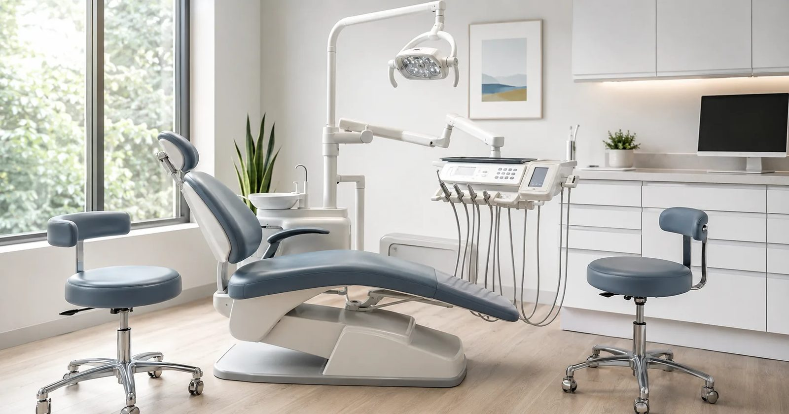

A father-and-son dental practice on the Mississippi Gulf Coast, caring for Bay St. Louis families.
Dr. M. Bert Keel Jr. is a Doctor of Dental Medicine practicing general dentistry in Bay St. Louis. He works alongside his father, Dr. Murray Keel, treating patients of all ages in a family practice setting.
Dr. Murray Keel is a Doctor of Dental Surgery providing general dental care to Mississippi Gulf Coast families. He practices with his son, Dr. M. Bert Keel Jr., in their Bay St. Louis office.

Stock photo, shown for design purposes
The office at 304 N 2nd St keeps visits straightforward: clear explanations, honest recommendations, and appointments that respect your time. New patients are welcome. Call (228) 467-5577 to schedule.